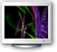
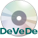

Πολυμέσα
 |
Audacity
Το Audacity είναι ένα πρόγραμμα επεξεργασίας ήχου με το οποίο μπορείτε να κάνετε εγγραφή, αναπαραγωγή, μίξη ήχων ή προσθήκη ηχητικών εφέ χρησιμοποιώντας μια ποικιλία από φίλτρα. Το Audacity σας επιτρέπει να επεξεργάζεστε τα ηχητικά σας κομμάτια χρησιμοποιώντας την αποκοπή, την αντιγραφή και επικόλληση (με απεριόριστη αναίρεση) και τη μίξη πολλαπλών τμημάτων μαζί. Μπορείτε να σώσετε τα αρχεία σας σε έναν μεγάλο αριθμό μορφών, συμπεριλαμβανομένων των WAV, Ogg Vorbis και AIFF, ή να σώσετε το έργο σας στη εγγενή μορφή του Audacity για υψηλή απόδοση επεξεργασίας.
|
|
Avidemux
Το Avidemux είναι ένα δωρεάν πρόγραμμα επεξεργασίας βίντεο που σχεδιαστεί για απλή κοπή, φιλτράρισμα και κωδικοποίηση μιας ταινίας. Υποστηρίζει πολλούς τύπους αρχείων, συμπεριλαμβανομένων των AVI, DVD συμβατά αρχεία MPEG, MP4 και ASF, χρησιμοποιώντας μια ποικιλία κωδικοποιητών. Έχει διάφορες αυτοματοποιημένες λειτουργίες, σειρά αναμονής εργασίας και ισχυρές δυνατότητες scripting.
|
|  |
Really Slick Screensavers
Το Really Slick Screensavers είναι μια συλλογή από εντυπωσιακά screensaver για την αποτροπή εμφάνισης ειδώλου (burn-in) στην οθόνη του υπολογιστή σας. Όλα τα screensavers είναι πλήρως προσαρμόσιμα.
|
|
VLC media player
Ο
Ο VLC media player υποστηρίζει ένα μεγάλο αριθμό τύπων ήχου και βίντεο άμεσα (out of the box), ούτως ώστε να μην χρειάζεστε να αναζητάτε διαφορετικό λογισμικό για αναπαραγωγή των περισσότερων αρχείων πολυμέσων. Μπορείτε επίσης να κωδικοποιήσετε (encode) κάποιο μέσο σε μια άλλη μορφή και να χρησιμοποιήσετε την μετάδοση ροής (streaming) ήχου και βίντεο μέσω διαδικτύου.
|
|
HandBrake
Το HandBrake είναι ένα πρόγραμμα ανοιχτού κώδικα που έχει σχεδιαστεί για να μετατρέπει βίντεο MPEG (συμπεριλαμβανομένων των DVD-Video) σε MPEG-4 αρχεία βίντεο, μορφής "MPEG-4 τύπος 14 (. Mp4)" ή "Matroska (. Mkv)".
Το πρόγραμμα χρησιμοποιείται για να μετατρέψει τα DVD σε άλλες μορφές, ώστε να μπορούν να προβληθούν σε iPods, iPhones και με το Mac QuickTime Player. |
|
Miro Video Player
Κατεβάστε torrents και podcasts, κάντε αναπαραγωγή οποιουδήποτε βίντεο, και κάντε το με το στυλ του Miro!
Το Miro είναι ένα δωρεάν πρόγραμμα αναπαραγωγής βίντεο υψηλής ευκρίνειας. Μπορεί να παίξει σχεδόν οποιοδήποτε αρχείο βίντεο και προσφέρει πάνω από 6.000 δωρεάν τηλεοπτικές εκπομπές από το internet και podcast βίντεο.
Διαθέτει ένα απλό, πανέμορφο περιβάλλον σχεδιασμένο για πλήρη οθόνη βίντεο HD. Πολύ απλά, το Miro είναι ο καλύτερος τρόπος για να παρακολουθήσετε όλα τα βίντεο που σας ενδιαφέρουν.
Το καλύτερο από όλα, το Miro είναι 100% δωρεάν και ανοιχτού κώδικα και αναπτύχθηκε από μια μη κερδοσκοπική οργάνωση εθελοντών από όλο τον κόσμο.
|
|  |
DeVeDe
Το DeVeDe είναι ένα πρόγραμμα για τη δημιουργία βίντεο DVD και CD (VCD, SVCD ή CVD), ειδικά για οικιακά dvd-players, από οποιοδήποτε αρχεία βίντεο, σε οποιαδήποτε από τις μορφές που υποστηρίζονται γενικώς.
|
Έκδοση - 1.2.0 | Ένωση Ελλήνων Χρηστών και Φίλων ΕΛ/ΛΑΚ (GreekLUG)
|
|